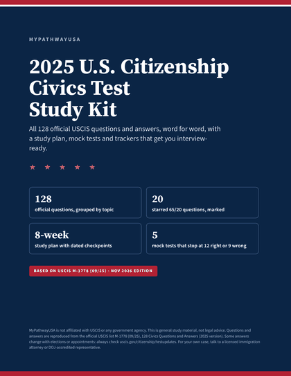
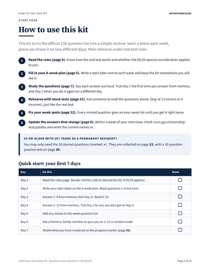
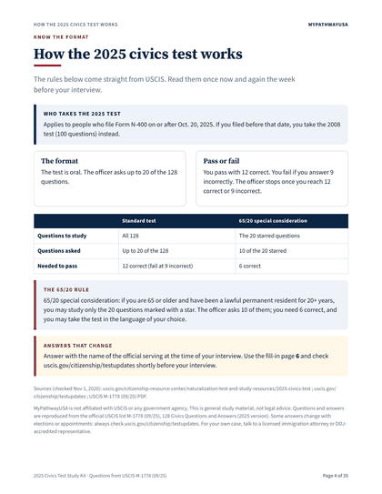
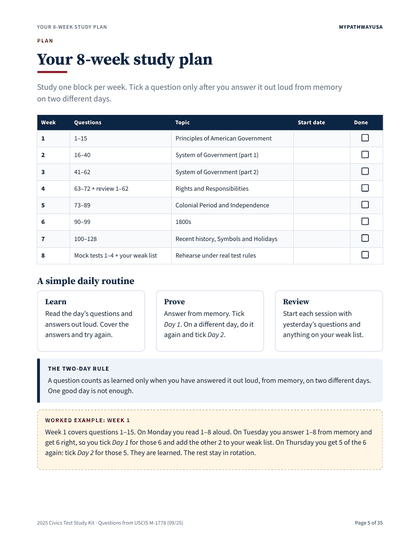
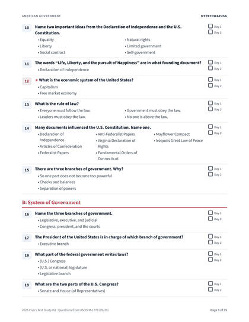
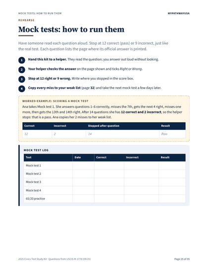
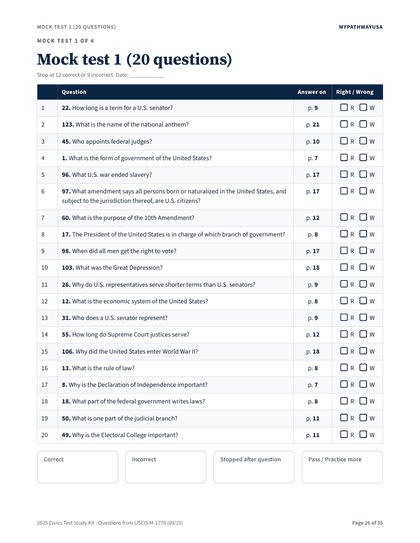
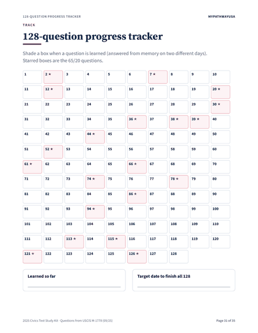
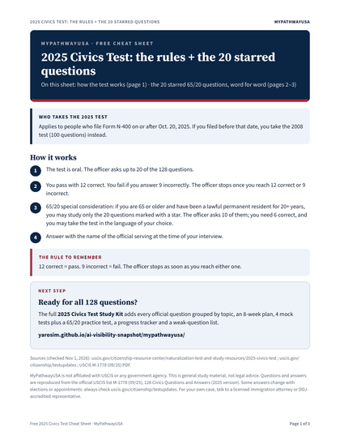
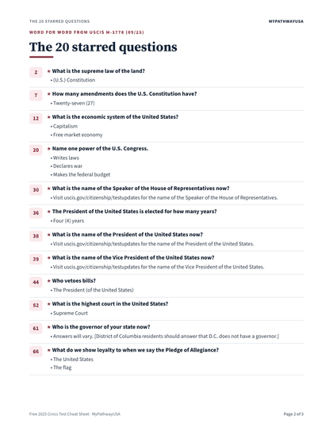

2025 U.S. citizenship civics test
Walk into your interview knowing all 128 answers.
A printable, step-by-step kit built on the official USCIS list: learn a block a week, prove it on two different days, then rehearse under the real 12-right / 9-wrong rules.
Get the Study Kit — $12 Free cheat sheet- All 128 questions, word for word
- 20 starred 65/20 questions marked
- Instant download

What’s inside
Real pages from the kit. Every question and answer is reproduced exactly as published in USCIS M-1778 (09/25).







Study pages
All 128 questions grouped by topic, with Day 1 / Day 2 tick boxes, plus the 20 starred questions on their own pages.
Practice pages
4 mock tests of 20 questions and a 10-question 65/20 practice test, each listing the page where the official answer is printed.
Fill-in pages
8-week plan, “answers that change” worksheet, weak-question list, progress tracker, final-week checklist and key takeaways.
How it works
A simple routine that fits around work and family.
Learn a block
Follow the 8-week plan. Read each question and answer out loud.
Prove it twice
Tick Day 1 and Day 2 only when you answer from memory on two different days.
Rehearse
A helper reads a mock test aloud. Stop at 12 correct or 9 incorrect, like the real test.
Update
Copy the current names from uscis.gov/citizenship/testupdates onto the fill-in page.
Who it’s for
New N-400 applicants
Anyone who files Form N-400 on or after Oct. 20, 2025 and takes the 2025 civics test.
65/20 applicants
If you qualify for the 65/20 special consideration, the 20 starred questions and the 65/20 practice test are marked for you.
Family and tutors
Mock tests and page references make it easy for a helper to quiz you, even without knowing the answers.
Full kit
2025 Civics Test Study Kit
- 35-page printable PDF (US Letter)
- All 128 official questions and answers (USCIS M-1778, 09/25), grouped by topic
- The 20 starred questions for the 65/20 special consideration
- 8-week study plan + 7-day quick start
- 4 mock tests + a 65/20 practice test
- “Answers that change” worksheet, weak-question list, progress tracker
- Excel study tracker with automatic dashboard + editable Word planner
Free
Rules + the 20 starred questions
A 3-page PDF cheat sheet: how the 2025 test works and the 20 starred 65/20 questions, word for word.
We use your email only to send study tips. Unsubscribe anytime.

FAQ
Are these the official questions?
Yes. Every question and answer is reproduced word for word from the official USCIS list M-1778 (09/25), 128 Civics Questions and Answers (2025 version). Nothing is reworded.
Which test will I take?
USCIS gives the 2025 civics test to people who file Form N-400 on or after Oct. 20, 2025. If you filed before that date, you take the 2008 test (100 questions) instead.
How is the 2025 test scored?
The test is oral. The officer asks up to 20 of the 128 questions. You pass with 12 correct and fail if you answer 9 incorrectly; the officer stops once you reach either.
I am 65 or older. What do I study?
65/20 special consideration: if you are 65 or older and have been a lawful permanent resident for 20+ years, you may study only the 20 starred questions. The officer asks 10 of them; you need 6 correct, and you may take the test in the language of your choice. The kit marks those 20 and includes a 10-question 65/20 practice test.
Some answers change. How does the kit handle that?
Answer with the name of the official serving at the time of your interview. The kit has a fill-in page for every answer that changes, so you can copy the current names from uscis.gov/citizenship/testupdates shortly before your interview.
What exactly do I download?
A 35-page printable PDF (US Letter), an Excel study tracker with all 128 questions and an automatic progress dashboard, and an editable Word study planner. Download right after checkout.
Is this legal advice?
No. MyPathwayUSA is not affiliated with USCIS or any government agency. This is general study material. For your own case, talk to a licensed immigration attorney or DOJ-accredited representative.
Need to organize documents for interview day? See the N-400 Interview Day Binder ($9). Free practice videos on YouTube.
Feedback
Tell us what would make this study kit more useful.